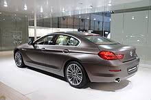

История и внешние особенности
Купе, как и фаэтон с кабриолетом, возникли еще до появления первых автомобилей и относились к каретам.
Слово «купе» происходит от французского слова «coupe». Первые такие кузова стали появляется еще в XIX веке во Франции в виде корпусов для карет.
Затем технологии, конструкции и терминологию каретников стали заимствовать производители автомобилей.
Этот тип кузова имеет две двери, в редких случаях три (одна задняя слита с багажником), как правило, один или два ряда сидений. Багажник полностью отделен.
Чаще всего купе используются в спортивных машинах. Также в наше время понятие «купе» достаточно часто применяется в маркетинговых целях, чтобы акцентировать внимание на спортивном стиле рекламируемого автомобиля.
Купе или хэтчбек. Что же лучше?
Сложно ответить на этот вопрос при незнании предпочтений будущего хозяина.
Если Вы любитель быстрой и комфортной езды, то, наверное, вам больше подойдет именно купе, если же вы семьянин, который на первое место ставит комфорт и безопасность своих детей,
то верный выбор – хэтчбек. Также большое значение имеет эстетическая сторона медали, хэтчбеки больше подходят людям, которые ценят практичность и универсальность,
купе же подойдет для ценителей имиджа и внешних характеристик кузова. Спортивная форма, свойственная купе, не оставит равнодушной ни одну девушку, поэтому данный вид кузовов ценится среди молодежи.
Также стоит отметить ценовую политику: купе чаще всего стоят дороже, чем хэтчбеки. В каталоге компании FAVORIT MOTORS вы найдете новые автомобили обоих типов.
Купе или хэтчбек. Что же лучше?
Купе и седан. В чем же отличия?
Седан – наиболее схожий с купе кузов.
Есть мнение, что купе отличается от седана количеством дверей (если четыре, то седан, а если две – купе).
Некоторые специалисты считают, что отличить эти два кузова друг от друга можно по форме, их оппоненты утверждают, что спортивная компоновка свойственна исключительно купе,
но это абсолютно неверная позиция, которая многих вводит в заблуждение. На самом деле различий между седаном и купе практически нет. SAE (Сообществом автомобильных инженеров США) был введен стандарт,
являющийся единственным критерием, по которому можно определить принадлежность автомобиля к тому или иному классу.
В его содержании сказано, что к купе относится автомобиль, у которого объем заднего ряда сидений не превышает 33 кубических фута (это приблизительно 0,93 м³), а у седана этот показатель,
должен быть равен или превышать 0,934 кубических метра.
Купе и седан. В чем же отличия?
А значит, определить, купе ли перед Вами или седан, можно лишь, измерив объем пассажирского отделения.
И, если Вы видите перед собой двухдверный автомобиль, из этого напрямую не следует, что это купе. Если же у него объем внутреннего пространства больше 0,93 куб. м, то это двухдверный седан.
Вывод
Итак, мы рассмотрели один из первых в мире автомобильных кузовов, узнали его историю и происхождение. Высокая комфортабельность передних сидений в сочетании с внешней привлекательностью делает купе просто фаворитом у людей,
которые любят быструю езду и ценят презентабельность. Для таких людей недостатки, которые имеет данный вид кузова, значения иметь не будут.